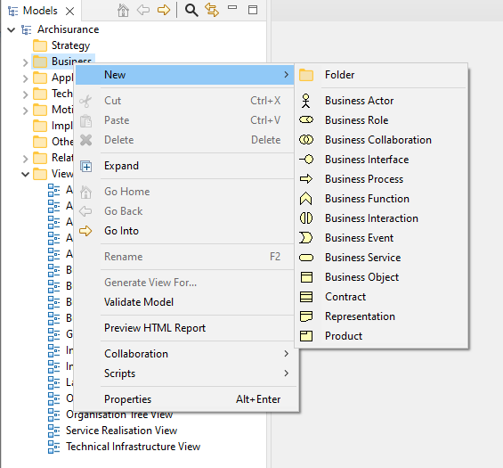

要将新的ArchiMate元素直接添加到模型树，请选择文件夹之一，“业务”、“应用”、“技术”或“连接器”并右键单击。 “新建”菜单项允许您向树中添加新元素：
直接向模型树添加新元素
当元素被添加到模型树时，焦点被赋予元素，您可以为其提供一个新名称。
请注意，无法将关系直接添加到模型树，因为这些关系只能通过在视图（图表）编辑器窗口中绘制来添加。
如果您创建了专用元素,这些元素将显示在“新建”右键菜单的元素列表底部,以便您快速像添加任何其他元素一样向模型中添加专用元素。这可以在首选项中启用或禁用。